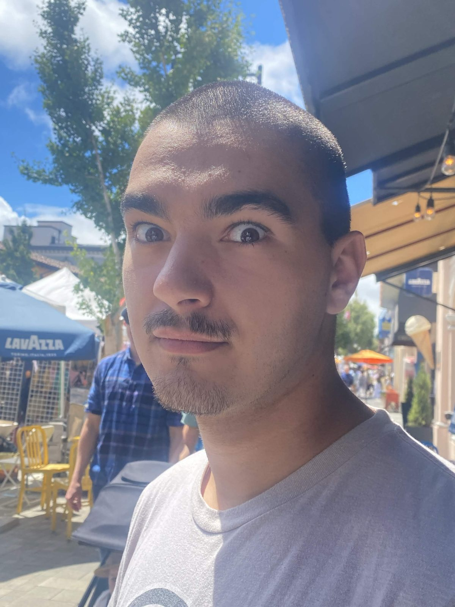

About Fabian

No matter how bad it gets, I am ride or die for mine.
Fabian is twenty-one years old and works as an automotive technician. He is Greek and Mexican, and the path that got him under a car is not the one anyone would guess.
It started with The Citadel, one of six senior military colleges recognized by Congress. He chose it deliberately, knowing he was not built for a conventional academic environment, and he went in aiming at an ROTC scholarship. For nine months he balanced Civil Engineering coursework with Infantry Platoon Leader Courses and Ranger training he volunteered for on top of everything else. He describes it as the hardest and most rewarding thing he has done, and it left him with a working standard he still measures himself against.
The cars came from a video game. He found My Summer Car, a simulator built around assembling a vehicle from parts, and it showed him a kind of problem he liked. Back in California he took a job at an auto parts store, bought a five hundred dollar car out of a junkyard, and taught himself on it. The trade followed from there. Today his day runs on oil changes, transmission and differential services, and inspections, and the work he actually wants is the complicated end of it: transmissions, European cars, modifications. As an apprentice he helped cut a wrecked Honda apart and weld a factory frame section back into it, asking journeymen and chasing procedures the whole way through.
His own car is a 2004 Honda Civic EX that arrived with a blown head. It now has race suspension, rally gears, a cold air intake, and no back seats. The goal is the track. Next is an ECU swap, because Honda locks the factory one and nothing else can happen until it is open.
Away from the shop he plays tactical realism games, an interest that traces back to his father, a veteran, and to seven years as a Police Explorer starting at thirteen. Ordinary shooters do not work for him because nothing in them carries consequence.
In five years he wants ASE certifications in engine and transmission work, and a bay at a shop that builds GT3 and GT2 Porsches.
Automotive technician
The Citadel, Civil Engineering
Greek and Mexican
Building a 2004 Civic EX for the track
The work does not stop when the shift does.